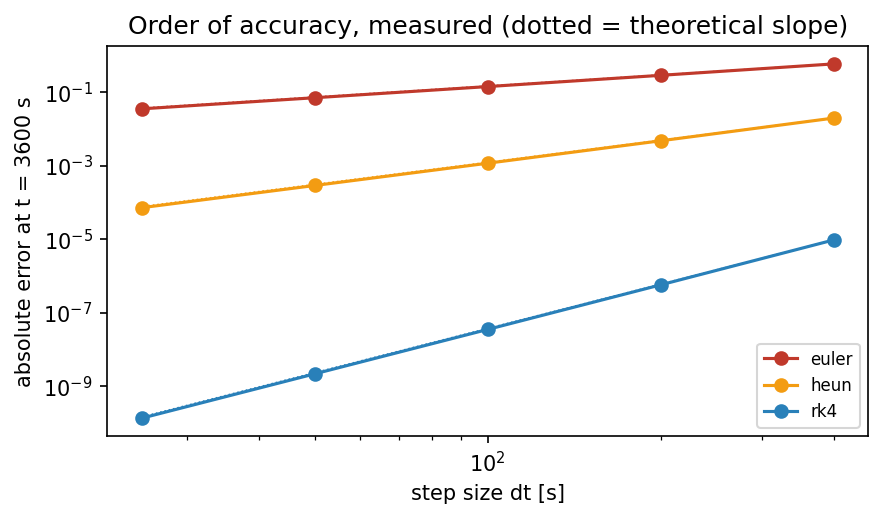
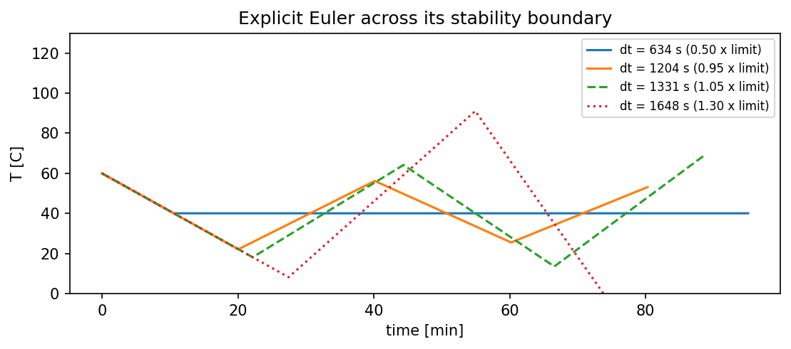
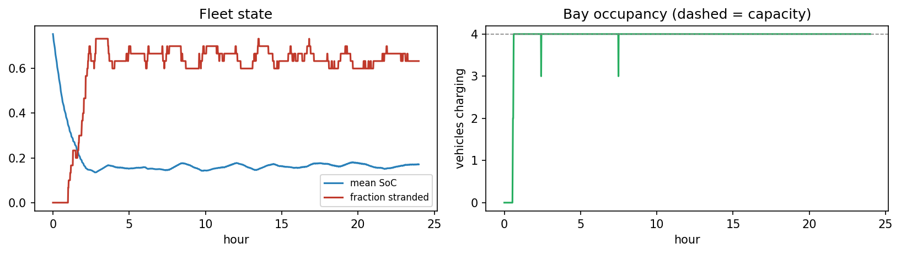
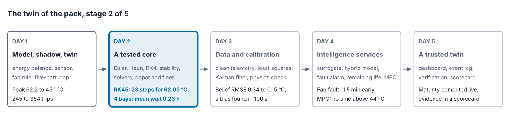
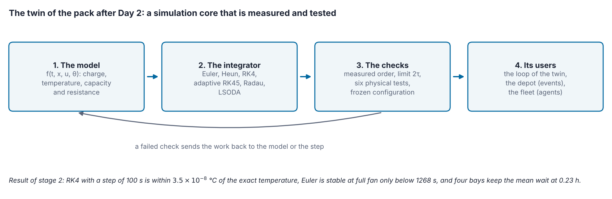

Overview
Every part of a digital twin calls its simulation core, the code that computes how the asset changes over time, so an error there spreads into every estimate and decision built on it. This day builds the core. It introduces the three kinds of simulation used in twins, continuous models described by differential equations, discrete-event simulation and agent-based simulation [1, 2], and integrates the model of the battery pack with three methods whose accuracy and stability are measured [3, 4]. A charging depot and a fleet of vehicles show the other two kinds at work.
Day at a glance
flowchart LR A["Three ways to simulate"] --> B["Time scales"] B --> C["Integration and its order"] C --> D["The stability limit"] D --> E["Adaptive solvers"] A --> F["A depot: discrete events"] A --> G["A fleet: agents"] E --> S["The twin of the pack, stage 2"] S --> H["Your asset"]
Every method on this page is also written as Python code in the Colab notebook of the day. A Colab notebook is a document of text and Python code that runs in the web browser, with nothing to install. Its code is divided into numbered sections. Each orange box on this page names the section whose code carries out what the text above the box explains. The box says what to run and what to look at in that section, and its button opens the notebook at that place. The practice parts and the self-assessment of the day are in the interactive lab.
Python step 2: NumPy arrays and functions that receive functions
Python code in the Colab notebook, right after Section 0 (setup). Open the notebook and run this step cell by cell: It consists of short pieces of Python code with their explanations, a quick check and three exercises. Topics: Time grids and element-wise arithmetic · Masks and summaries · A function that receives the model · Checking against the exact solution · The order, measured.
The notebook continues with the hands-on sections. The study path, the daily task and the research assignment are on the day overview.
Three ways to simulate
Day 1 stated the model of the pack and climbed the maturity ladder on a simulated highway trip of two hours. The digital model drifted several degrees away from the pack. The digital shadow followed it within 0.32 °C by copying a reading every two minutes, yet the pack still overheated. Only the digital twin, which also switched the fan, kept the pack below its limit of 46 °C. Under a sensor that read five degrees too low, the same twin let the pack overheat for 95 minutes without a single report.
Every value that the twin reported came from a numerical integration of the model, so the accuracy and the stability of this integration decide what those values are worth. This day examines that simulation core of the project. It ends with a charging depot and a fleet of vehicles that carry such packs, two systems that a continuous model alone cannot describe.
A simulation computes how a system behaves over time from a model, that is, from the equations or rules that describe the system. The numbers that describe the system at one moment, such as the charge and the temperature of a battery pack, are called its state. Every simulation computes the state a little later from the state now, and the three families below differ in how they do it.
Simulations of physical systems come in three families, also called paradigms, and a digital twin often combines them [1, 2]. A continuous model describes quantities that change smoothly, such as the temperature of the pack, with differential equations. A discrete-event model describes a system whose state changes only when something happens, such as a vehicle arriving at a charging depot. An agent-based model describes many independent actors, called agents, each with its own rules, and lets the behaviour of the whole emerge from them, such as a fleet of vehicles that decide when to recharge.
The water level in a tank rises and falls smoothly with its inflow and outflow, a continuous system. The line at a ticket counter changes only when a customer arrives or is served, a discrete-event system. The traffic of a city arises from thousands of drivers who each choose a route by their own rules, an agent-based system in which nobody plans the traffic jam that they create together.
A differential equation states the rate of change of a quantity and not the quantity itself. The rate of change is the derivative with respect to time: the slope of the curve that the quantity draws against time, written \(dx/dt\) or, with a dot, \(\dot{x}\). A continuous model has the general form
Here \(t\) is the time, \(x\) the state and \(u\) an input that acts from outside, such as the setting of a fan, and \(\theta\) stands for the fixed parameters of the asset, such as its heat capacity. The function \(f\) returns how much the state changes per second. An equation of this kind, with derivatives with respect to one variable only, is called an ordinary differential equation, abbreviated ODE. The sections below write \(f(t, x)\) for short.
| Family | The state changes | Typical question | Example of the day |
|---|---|---|---|
| Continuous | smoothly, by differential equations | How hot will the pack be in an hour? | the battery pack |
| Discrete-event | at the moments when events happen | How long will vehicles wait at the depot? | the charging depot |
| Agent-based | through the rules of many actors | How many vehicles will run out of charge? | the fleet |
Check your understanding. A twin of a hospital emergency department must predict waiting times as patients arrive. Which family fits best?
Time scales
The continuous model of the day is the model of the pack from Day 1. The table lists the four quantities of its state, its three inputs and its fixed parameters, with the values used on this day.
| Symbol | Meaning | Value used on this day |
|---|---|---|
| \(\mathrm{SoC}\) | state of charge: the share of the usable charge that is still in the pack, from 0 to 1 | 0.95 at the start |
| \(T\) | cell temperature in °C | 36 °C at the start |
| \(Q\) | usable capacity in Ah: the charge that the full pack can deliver | \(Q_0 = 60\) Ah when new |
| \(R\) | internal resistance in ohms | \(R_0 = 0.045\) ohm when new |
| \(I\) | input: the current that the load draws, in A | 40 A in the first three sections |
| \(u\) | input: the duty of the cooling fan, from 0 for off to 1 for full power | 0 or 1 |
| \(T_{\mathrm{amb}}\) | input: the ambient temperature, the temperature of the surrounding air | 35 °C |
| \(m c_p\) | heat capacity of the pack, its mass \(m\) times its specific heat \(c_p\): the energy that warms the pack by one degree | 9000 J/K |
| \(hA_0\) | cooling conductance without the fan, a heat transfer coefficient \(h\) times a surface \(A\): the heat that flows to the air per degree of temperature difference | 2.2 W/K |
| \(hA_1\) | extra cooling conductance at full fan | 12 W/K |
| \(k_{\mathrm{age}}\) | ageing constant: the capacity lost per ampere and second at 25 °C | \(5.5 \times 10^{-8}\) Ah |
| \(T_a\) | activation temperature: how strongly warmth speeds up the ageing | 3800 K |
| \(T_{\mathrm{ref}}\) | reference temperature of the ageing law | 298.15 K, which is 25 °C |
Each quantity of the state has its own differential equation:
In the first line, a current of \(I\) amperes removes \(I / 3600\) ampere-hours per second, and the division by the capacity \(Q\) turns this into a share of the full charge. The second line is a heat balance. The current produces the heat \(I^2 R\) in the internal resistance, called ohmic heat and measured in watts. The air carries away the heat \((hA_0 + hA_1 u)(T - T_{\mathrm{amb}})\), which grows with the temperature difference and with the fan duty. The difference, divided by the heat capacity, is the warming in degrees per second.
The third line lets the capacity fade in proportion to the current, and faster when the pack is warm. The factor \(a(T)\) is 1 at 25 °C, 1.57 at 36 °C and 3.8 at 60 °C, and a law with this exponential dependence on the temperature is called an Arrhenius law. The number 273.15 converts degrees Celsius into kelvin. The fourth line lets the resistance grow as the capacity fades, and its right-hand side is zero for a new pack.
The first question about a continuous model is how fast each quantity changes. A simple measure is the characteristic time, the size of the quantity divided by the size of its rate of change:
The bars take the absolute value, the size without the sign. The result is the time in which the quantity would change by as much as its present value if its present rate stayed the same. For the pack, the charge changes over about an hour and a half, the temperature over a little more than an hour and the capacity over months.
The four rates are evaluated at one moment: \(\mathrm{SoC} = 0.95\), \(T = 36\) °C, a new pack, a current of 40 A, the fan off and 35 °C outside.
The charge falls at \(40 / (3600 \times 60)\)\({} = 40 / 216000\)\({} = 1.852 \times 10^{-4}\) per second, so its characteristic time is \(0.95 / (1.852 \times 10^{-4})\)\({} = 5130\) s, and \(5130 / 60 = 85.5\) minutes. In this and the following worked examples, intermediate values are rounded, and each step continues with the rounded value. At this rate the pack would be empty after that time.
The heat balance gives \((40^2 \times 0.045 - 2.2 \times (36 - 35))\)\({} / 9000\)\({} = (72 - 2.2) / 9000\)\({} = 69.8 / 9000\)\({} = 0.007756\) degrees per second, and \(36 / 0.007756 = 4642\) s, which is \(4642 / 60 = 77.4\) minutes.
For the capacity, the Arrhenius factor at 36 °C comes first. The reciprocals of the two temperatures in kelvin are \(1 / 298.15 = 0.00335402\) and \(1 / 309.15 = 0.00323468\), their difference is \(0.00011934\), the exponent is \(3800 \times 0.00011934\)\({} = 0.4535\), and \(a = e^{0.4535} = 1.574\). The capacity therefore falls at \(5.5 \times 10^{-8} \times 40 \times 1.574\)\({} = 2.2 \times 10^{-6} \times 1.574\)\({} = 3.463 \times 10^{-6}\) Ah per second. Its characteristic time is \(60 / (3.463 \times 10^{-6})\)\({} = 1.733 \times 10^{7}\) s, and divided by the 86400 seconds of a day this is 200.6 days. The resistance of a new pack does not change, so its characteristic time is infinite.
The slowest of the three characteristic times is about 3700 times the fastest: 200.6 days are \(200.6 \times 1440 = 288864\) minutes, and \(288864 / 77.4 = 3732\). Such a ratio is counted in orders of magnitude, where one order is a factor of ten, and \(\log_{10} 3700 = 3.6\). When a model mixes very fast and very slow quantities, it is called stiff, and the choice of the integration method becomes important. The reason is cost. The step must be short enough for the fastest quantity, as the stability limit below shows, while the slowest quantity asks for a long simulated time. Following the capacity over its 200 days in steps of one second takes \(200.6 \times 86400\)\({} = 1.733 \times 10^{7}\) steps, about 17.3 million.
A kettle heats its water within minutes, while limescale builds up inside it over months. A simulation that wants both must take steps short enough for the minutes and run long enough for the months. The same holds for a car, whose engine warms up within minutes while its tyres wear over years: Every model that mixes such time scales is stiff, and its cost is set by the fastest part and the longest horizon together.
Python code in the Colab notebook, Section 1. Open Section 1 of the Colab notebook and run it. The cell evaluates pack_derivatives, the model of Section 0, at one moment of the trip and divides every quantity by its rate of change, tau = abs(x0[j] / v), which gives its characteristic time. It prints the four rates with their characteristic times and the spread between the fastest and the slowest in orders of magnitude.
For the temperature, the characteristic time depends on where the scale has its zero, so it is a rough guide only. The thermal equation allows an exact statement. With a constant current and a constant fan duty, its solution from a start temperature \(T_0\) is
→ These formulas with numbers, step by step: Lab Part A, step 10.
\(T_\infty\), read as T infinity, is the equilibrium temperature at which heating and cooling balance, so that the rate of change is zero. The temperature approaches it along an exponential curve, in which \(e = 2.718\ldots\) is the base of the natural logarithm. The time constant \(\tau\) sets the pace: After the time \(\tau\), the distance to the equilibrium has shrunk to \(e^{-1} = 0.37\) of its first value.
With the fan off, the time constant of the pack is \(\tau = 9000 / 2.2 = 4091\) s, about 68 minutes. A current of 40 A produces the ohmic heat \(40^2 \times 0.045 = 72\) W, which gives \(T_\infty\)\({} = 35 + 72 / 2.2\)\({} = 35 + 32.73\)\({} = 67.73\) °C. At full fan the conductance is \(2.2 + 12 = 14.2\) W/K, the time constant falls to \(9000 / 14.2 = 634\) s, under 11 minutes, and the equilibrium to \(35 + 72 / 14.2\)\({} = 35 + 5.07\)\({} = 40.07\) °C, about 40.1 °C. One hour after a start at 36 °C with the fan off, the exponent is \(3600 / 4091 = 0.880\), the factor \(e^{-0.880} = 0.4148\), and the formula gives \(67.73\)\({} + (36 - 67.73) \times 0.4148\)\({} = 67.73 - 13.16\)\({} = 54.57\) °C. Computed without rounding, the value is 54.5673 °C, the exact value against which the integration methods of the next section are measured.
Integration and its accuracy
A computer advances a differential equation in small steps. The time is cut into steps of equal length \(\Delta t\), so that step number \(k\) ends at the time \(t_k = k\,\Delta t\). The computed temperature at that time is written \(T_k\), and the start value \(T_0\) is given. A method of numerical integration is a rule that computes \(T_{k+1}\) from \(T_k\). The three methods of the day use the slope \(f(t, T)\), the right-hand side of the thermal equation, and one computation of this slope is called a derivative evaluation.
The explicit Euler method follows the slope at the start of each step:
→ This formula with numbers, step by step: Lab Part A, steps 2 and 3.
The new value is the old value plus the step length times the slope, so the method walks along a straight line for the whole step. It is called explicit because everything on the right-hand side is already known. Heun's method averages two slopes: the slope at the start and the slope at the end point that an Euler step would reach.
→ These formulas with numbers, step by step: Lab Part A, steps 2, 4 and 5.
The classical Runge-Kutta method of Day 1, RK4, named after the mathematicians Carl Runge and Wilhelm Kutta, combines four slopes: one at the start, two in the middle of the step and one at the end.
→ These formulas with numbers, step by step: Lab Part A, steps 2 and 6 to 9.
Each slope is taken at a point that the slope before it predicts. The middle slopes count twice, and the weights add up to \(1 + 2 + 2 + 1 = 6\), which explains the division by 6. Euler needs one derivative evaluation per step, Heun two and Runge-Kutta four. The formulas hold unchanged for any state \(x\) in place of \(T\), also for a list of several quantities.
A hiker who walks for an hour in the direction that the path takes at the start ends far from a curved path: This is Euler. A hiker who also looks at the direction at the end of the stretch and walks the average of the two directions stays much closer: This is Heun. A hiker who checks the direction twice more in the middle of the stretch hardly leaves the path at all, the idea of Runge-Kutta. Each extra look costs time, which is the price of accuracy that this section measures.
The pack starts at \(T_0 = 36\) °C with a current of 40 A, the fan off and 35 °C outside, and the step is \(\Delta t = 600\) s. The slope at a temperature \(T\) is \(f(T)\)\({} = (72 - 2.2\,(T - 35))\)\({} / 9000\) degrees per second. At the start it is \(s_1\)\({} = (72 - 2.2 \times 1) / 9000\)\({} = 69.8 / 9000\)\({} = 0.0077556\), so Euler gives \(T_1\)\({} = 36 + 600 \times 0.0077556\)\({} = 36 + 4.6534\)\({} = 40.6534\) °C.
Heun evaluates the slope again at this end point: \(s_2\)\({} = (72 - 2.2 \times 5.6534)\)\({} / 9000\)\({} = (72 - 12.4375) / 9000\)\({} = 59.5625 / 9000\)\({} = 0.0066181\). The mean of the two slopes is \((0.0077556 + 0.0066181)\)\({} / 2\)\({} = 0.0071869\), and \(T_1\)\({} = 36 + 600 \times 0.0071869\)\({} = 36 + 4.3121\)\({} = 40.3121\) °C.
Runge-Kutta takes its second slope in the middle of the step, at \(36 + 300 \times 0.0077556\)\({} = 36 + 2.3267\)\({} = 38.3267\) °C, where \(s_2\)\({} = (72 - 2.2 \times 3.3267)\)\({} / 9000\)\({} = 0.0071868\). The third slope belongs to \(36 + 300 \times 0.0071868\)\({} = 38.1560\) °C and is \(s_3\)\({} = (72 - 2.2 \times 3.1560)\)\({} / 9000\)\({} = 0.0072285\). The fourth belongs to the end point \(36 + 600 \times 0.0072285\)\({} = 40.3371\) °C and is \(s_4\)\({} = (72 - 2.2 \times 5.3371)\)\({} / 9000\)\({} = 0.0066954\). The weighted sum is \(0.0077556\)\({} + 2 \times 0.0071868\)\({} + 2 \times 0.0072285\)\({} + 0.0066954\)\({} = 0.0432816\), its sixth is \(0.0072136\), and \(T_1\)\({} = 36 + 600 \times 0.0072136\)\({} = 36 + 4.3282\)\({} = 40.3282\) °C.
The exact solution of the previous section, computed without rounding, is 40.3282 °C as well. Euler is wrong by \(40.6534 - 40.3282\)\({} = 0.3252\) degrees, Heun by \(40.3121 - 40.3282\)\({} = -0.0161\) degrees and Runge-Kutta by 0.00002 degrees.
Interactive lab, Part A. The same step with each method, with sliders for the step, the start temperature, the current and the fan duty. Every slope and every intermediate point is shown one step at a time, and a figure draws the line along which each method moves against the exact curve.
The difference between the computed and the true value at the end of the simulated time is called the global error. It depends on the step and is written \(e(\Delta t)\). For small steps it is proportional to a power of the step:
The constant \(c\) depends on the problem and on the method. The exponent \(p\) decides how much a shorter step helps, because halving the step divides the error by \(2^p\). The difference shows in the accuracy: Halving the step halves the error of Euler, divides the error of Heun by four and the error of Runge-Kutta by sixteen. The exponent, one, two or four, is called the order of the method, and it can be measured instead of taken on trust. Two runs whose steps differ by a factor of two are enough:
The base-2 logarithm \(\log_2 y\) is the power to which 2 must be raised to obtain \(y\), so that \(\log_2 8 = 3\). An error can be measured only against a value that is known to be right. The reference here is the Runge-Kutta result with a step of 0.01 s, 54.567342166 °C after one hour. It agrees with the exact solution to twelve decimal places. The table shows the errors of the three methods against this reference, in °C.
| Step \(\Delta t\) | Error of Euler | Error of Heun | Error of Runge-Kutta |
|---|---|---|---|
| 400 s | 0.592 | 0.0199 | \(9.6 \times 10^{-6}\) |
| 200 s | 0.289 | 0.0048 | \(5.7 \times 10^{-7}\) |
| 100 s | 0.143 | 0.0012 | \(3.5 \times 10^{-8}\) |
| 50 s | 0.071 | 0.00029 | \(2.2 \times 10^{-9}\) |
| 25 s | 0.035 | 0.000072 | \(1.4 \times 10^{-10}\) |
In the table, the error of Heun falls from 0.0199 at a step of 400 s to 0.0048 at 200 s. With one more digit the ratio is \(0.01987 / 0.004787 = 4.15\), and \(\log_2 4.15\)\({} = \ln 4.15 / \ln 2\)\({} = 1.423 / 0.693\)\({} = 2.05\): The measured order is close to 2.
The same computation for the last two rows gives 1.00 for Euler, 2.01 for Heun and 4.01 for Runge-Kutta.

On a logarithmic axis every step of the scale is a factor of ten, and a power law becomes a straight line whose slope is the exponent. The line of Euler falls by one factor of ten when the step falls by a factor of ten, and the line of Runge-Kutta by four. Between 400 s and 25 s the step shrinks 16 times and the error of Runge-Kutta \(9.6 \times 10^{-6}\)\({} / (1.4 \times 10^{-10})\)\({} = 69000\) times, close to \(16^4 = 65536\).
Accuracy has a price. The fair measure of the price is the number of derivative evaluations, the work that all three methods share:
Here \(t_{\mathrm{end}}\) is the simulated time and \(n_s\) the number of slopes per step: 1 for Euler, 2 for Heun and 4 for Runge-Kutta. A plot of the error against \(N\) is called a work-precision diagram, and Part B of the interactive lab and the daily task draw one. Suppose that the error after one hour must stay below 0.0001 °C. Runge-Kutta reaches this target with \(3600 / 400 = 9\) steps of 400 s, which are \(4 \times 9 = 36\) evaluations, and Heun with \(3600 / 25 = 144\) steps of 25 s, which are \(2 \times 144 = 288\). Euler misses the target even at 25 s, where its error is still 0.035 °C. Because its error is proportional to the step, the step would have to shrink by the same factor as the error, \(0.035 / 0.0001 = 350\), to \(25 / 350 = 0.071\) s, and that takes \(3600 / 0.071 = 50700\) evaluations, about 51000.
Interactive lab, Part B. The thermal model of the pack integrated over two hours with a method, a step and a fan duty of your choice. Every run is added to a work-precision diagram, its error against its derivative evaluations.
Python code in the Colab notebook, Section 2. Open Section 2 of the Colab notebook and run it. The functions euler_step, heun_step and rk4_step are the three rules above, and integrate repeats one of them over an hour. The cell prints the error of each method for a series of step sizes, the measured orders, and the work that each needs for the same accuracy.
Check your understanding. Halving the step size divides the error of a method by 16. What is its order?
The stability limit
Accuracy is not the only concern. If the step of explicit Euler is too long, the numerical solution starts to oscillate with growing amplitude, although the real pack is perfectly calm. The formulas above show why. With a constant current and a constant fan duty, the thermal equation can be written with the distance from the equilibrium:
The number \(\lambda\), the Greek letter lambda, is the rate constant of the equation. It is negative, because the temperature moves towards the equilibrium, and its size is one over the time constant. With this slope, one Euler step becomes
Every step multiplies the distance from the equilibrium by the same number \(g\), the amplification factor, so after \(k\) steps the distance is \(g^k\) times the first one. The true distance shrinks smoothly. The computed one behaves in three ways, depending on the step:
| Step | Factor \(g\) | Computed temperature |
|---|---|---|
| \(\Delta t < \tau\) | between 0 and 1 | approaches the equilibrium from one side, as the true one does |
| \(\tau < \Delta t < 2\tau\) | between \(-1\) and 0 | jumps to the other side of the equilibrium at every step, and the jumps die out |
| \(\Delta t > 2\tau\) | below \(-1\) | jumps to the other side of the equilibrium at every step, and the jumps grow without limit |
A shower whose water reacts slowly to the tap is hard to set. Someone who turns the tap far whenever the water is too cold soon finds it too hot, turns it far back and finds it too cold again, and the swings grow. Small turns with a pause in between settle on the right temperature. An explicit method with a step longer than the stability limit makes the same mistake: It corrects by more than the distance to the equilibrium.
A value that jumps from one side to the other is an oscillation, and the size of the jumps is its amplitude. A method is called stable when the jumps do not grow, which requires \(g \ge -1\):
For the pack, the limit is twice the heat capacity divided by the cooling conductance: \(2 \times 9000 / 2.2 = 8182\) seconds with the fan off and \(18000 / 14.2 = 1268\) seconds at full fan, because the fan makes the temperature respond faster. A controller that switches on the fan can therefore make a stable simulation unstable. A step of 2000 s, for example, has \(g\)\({} = 1 - 2000 / 4091\)\({} = 1 - 0.489\)\({} = 0.51\) with the fan off and \(g\)\({} = 1 - 2000 / 634\)\({} = 1 - 3.155\)\({} = -2.16\) at full fan.
Interactive lab, Part C. Two stability limits and one order of accuracy computed by hand, with the formulas of this section. The lab checks each value.
A small device has a heat capacity of 500 J/K and a cooling conductance of 2.5 W/K, so \(\tau = 500 / 2.5 = 200\) s and the stability limit is 400 s. It starts 10 degrees above its equilibrium.
With \(\Delta t = 100\) s the factor is \(g = 1 - 100 / 200 = 0.5\), and each step multiplies the distance by it: 10, \(10 \times 0.5 = 5\), \(5 \times 0.5 = 2.5\) and 1.25, a smooth approach. With \(\Delta t = 300\) s the factor is \(g = 1 - 300 / 200 = -0.5\), and the distance runs 10, \(-5\), 2.5, \(-1.25\): an oscillation that dies out. With \(\Delta t = 500\) s the factor is \(g = 1 - 500 / 200 = -1.5\), and the distance runs 10, \(10 \times (-1.5) = -15\), \(-15 \times (-1.5) = 22.5\) and \(-33.75\): an oscillation that grows.
Nothing in the device oscillates. The growing swing is produced by the method alone.
Animation. Explicit Euler near its stability limit at full fan, against a reference computed with RK4 and a step of 5 s. The current varies as on the highway trip of Day 1. Move the step size past the limit and watch the numerical solution oscillate.

The four runs of the figure start about 20 degrees above the equilibrium of 40.1 °C. At half the limit the step equals the time constant, so \(g = 0\) and the first step lands on the equilibrium. At 0.95 times the limit, \(g = 1 - 2 \times 0.95 = -0.9\): The values 60, 22.1, 56.2, 25.5 and 53.1 °C swing around the equilibrium, and the swing shrinks by a tenth per step. At 1.05 times the limit, \(g = -1.1\), and the values 60, 18.1, 64.2, 13.5 and 69.2 °C swing wider each time. At 1.3 times the limit, \(g = -1.6\), and the third step falls to \(-41.6\) °C, below the edge of the plot.
A step below the limit keeps the error from growing, and it does not make the error small: The run at 0.95 times the limit is stable and far from the true curve. Heun's method and the Runge-Kutta method have limits of the same kind, \(2\tau\) for Heun and about \(2.8\,\tau\) for Runge-Kutta. In a model with several quantities, the fastest one sets the limit. The implicit Euler method removes the limit by taking the slope at the end of the step:
The unknown \(T_{k+1}\) now stands on both sides, so every step has to solve an equation, which is the meaning of implicit. For the thermal equation the factor of this method is \(g = 1 / (1 + \Delta t / \tau)\) and lies between 0 and 1 for every step length. Methods for stiff models are implicit for this reason. The price is the equation to solve in every step, and the order of implicit Euler is still 1.
Python code in the Colab notebook, Section 3. Open Section 3 of the Colab notebook and run it. The function stability_limit returns the largest stable step of the Euler rule, and the cell prints it for four fan duties. It then integrates the pack at full fan with steps below and above the limit and draws the four curves of the figure of this section. Exercise A asks for the limit at a fan duty of 0.5.
Check your understanding. Why does switching on the fan lower the stability limit of explicit Euler?
Check your understanding. A model with a time constant of 600 s is integrated with explicit Euler in steps of 900 s. What does the computed solution do?
Adaptive solvers
A fixed step must be short enough for the most demanding moment of a run, and it is then shorter than necessary everywhere else. Adaptive solvers estimate their own error in every step and choose the step size to keep it below a tolerance [3]. The estimate comes from computing the step twice from the same slopes, with a formula of order 5 and a formula of order 4. The two results differ by about the error of the less accurate one. This difference, written \(\hat{e}\) with a hat for an estimate, is compared with the tolerance:
The absolute tolerance atol and the relative tolerance rtol are set by the user: The allowed error of a step is atol plus the share rtol of the size of the state \(x\). The runs of this section use \(10^{-6}\) for rtol and \(10^{-9}\) for atol. A step with \(E\) below 1 is accepted, and a step with \(E\) above 1 is rejected and repeated. In both cases the next attempt uses the step \(\Delta t_{\mathrm{new}}\), which is longer when the error was far below the tolerance and shorter when it was above. The factor 0.9 is a safety margin, and the exponent belongs to an error estimate of order 4.
A step of 100 s ends with \(E = 32\): The estimated error is 32 times the allowed one. The step is rejected and tried again with \(0.9 \times 100 \times 32^{-1/5}\) seconds. Because \(2^5 = 32\), the fifth root of 32 is 2, and the new step is \(0.9 \times 100 / 2 = 45\) s.
Later a step of 100 s ends with \(E = 1/32\). It is accepted, and since \((1/32)^{-1/5} = 32^{1/5} = 2\), the next step is \(0.9 \times 100 \times 2 = 180\) s. The solver shortens its steps where the solution bends and lengthens them where it runs straight.
SciPy offers such solvers through the function solve_ivp, short for solve an initial value problem: a differential equation together with the start value of its state [4]. Three of them solve the two-hour highway trip of Day 1 with the fan off. RK45, the default, is the explicit Runge-Kutta pair of orders 5 and 4 by Dormand and Prince [3]. Radau is an implicit Runge-Kutta method of order 5 for stiff models. LSODA, the Livermore solver for ordinary differential equations with automatic method switching, changes by itself between a method for stiff and a method for other models.
| Solver | Steps | Derivative evaluations | Temperature after two hours |
|---|---|---|---|
| RK45 | 23 | 170 | 62.0336 °C |
| LSODA | 102 | 217 | 62.0336 °C |
| Radau | 96 | 728 | 62.0336 °C |
| RK4 with a fixed step of 1 s | 7200 | 28800 | 62.0336 °C |
The default solver of SciPy needs only about two dozen steps for the two-hour trip, where a fixed step of one second needs 7200 [4]. All four runs end at the same temperature to four decimal places. The steps of RK45 grow from 0.1 s at the start to several hundred seconds. On this short trip RK45 is also cheaper than the two solvers built for stiff models. Their strength shows on long horizons, where an explicit method has to keep every step near its stability limit.
A twin that must run in real time may still prefer a fixed step, because the time an adaptive step takes varies, and a control loop has a deadline. Real time means that every update of the model is finished before the next reading arrives, for example once per second. A loop in which a late result counts as a failure is called hard real time. A fixed step does the same work in every update, so its longest computing time is known in advance, also on an embedded processor, the small computer built into a device.
Python code in the Colab notebook, Section 4. Open Section 4 of the Colab notebook and run it. The function rhs is the model in the form that the SciPy library expects, and solve_ivp solves the trip with three adaptive methods and the tolerances rtol and atol. The cell prints the number of steps, len(sol.t), and of evaluations of the model, sol.nfev, next to those of a fixed step.
A depot and a fleet
A discrete-event simulation keeps a list of future events, jumps from one to the next and changes the state only there [1]. Each entry of the event list holds the time of an event and the action to carry out. The simulation repeats three moves. It takes the earliest event from the list, sets its clock to the time of that event and carries out the action, which may change the state and put new events on the list. It stops when the list is empty or the next event lies after the end time. Between two events nothing is computed, however long the gap is.
Scene: Two clocks. A small depot with two bays and eight vehicles over six hours, simulated with two clocks. The event clock of a discrete-event simulation jumps from one event to the next, and the tick clock advances by one minute and checks the depot at every tick. The orange marks are the arrivals and the green marks the ends of charging, which enter the event list when a charge starts. Both clocks find the same waits, and the readouts count the updates that each of them computed.
In the depot of this section, sixty vehicles a day arrive to be charged. Their arrival times are drawn at random over the first 18 hours of the day. Each vehicle arrives with a state of charge drawn between 0.05 and 0.40 and is charged to 0.90 at a charging place, called a bay. The charging current is \(I_c = 45\) A, and the capacity is that of the pack of the course, \(Q_0 = 60\) Ah, so the charging time in hours is
→ This formula with numbers, step by step: Lab Part D, step 1.
where \(\mathrm{SoC}_{\mathrm{in}}\) is the state of charge on arrival. The charging time lies between \((0.9 - 0.40) \times 60 / 45\)\({} = 30 / 45\)\({} = 0.67\) and \((0.9 - 0.05) \times 60 / 45\)\({} = 51 / 45\)\({} = 1.13\) hours, and its mean over the 60 vehicles of the simulated day is 0.91 hours. There are two kinds of events. At an arrival, the vehicle takes a free bay or joins the end of the waiting line. At the end of a charge, the first vehicle of the line takes over the bay, or the bay becomes free. Two numbers summarise the day:
→ These formulas with numbers, step by step: Lab Part D, every step in which a vehicle starts to charge, and the last step.
The waiting time \(w\) of a vehicle is the time between its arrival and the start of its charge. The utilisation \(\rho\), the Greek letter rho, compares the work that arrives with the work that the bays can do. In it, \(n\) is the number of vehicles, \(\bar{t}_c\) their mean charging time, \(B\) the number of bays and \(H\) the length of the day, 24 hours. The same number is the arrival rate \(n / H\) times the mean charging time, divided by the number of bays. Below 1 the bays keep up on average. Above 1 they cannot, and the line grows for as long as vehicles keep arriving.
Interactive lab, Part D. Six vehicles at a small depot, with one to three bays and a charging current of your choice. Each step takes the earliest event, moves the clock and changes the bays and the line, and a chart shows them over time with the wait of every vehicle.
| Bays | Utilisation | Mean wait | Wait that 95 percent of the vehicles stay below |
|---|---|---|---|
| 2 | 1.14 | 4.52 h | 9.44 h |
| 3 | 0.76 | 0.81 h | 2.13 h |
| 4 | 0.57 | 0.23 h | 0.77 h |
| 5 | 0.46 | 0.07 h | 0.43 h |
| 6 | 0.38 | 0.02 h | 0.20 h |
| 8 | 0.28 | 0.00 h | 0.00 h |
With two charging bays the utilisation is \(60 \times 0.91 / (2 \times 24)\)\({} = 54.6 / 48\)\({} = 1.14\): More work arrives than the bays can handle, and the waiting line grows for as long as vehicles arrive. It reaches 22 vehicles when the arrivals end after 18 hours, and the mean wait is 4.5 hours. A third bay brings the average wait below one hour, and a fourth to about a quarter of an hour. Such a steep fall is typical of a queue, the technical word for a waiting line, when the utilisation is close to 1.
A supermarket in which customers arrive a little faster than the open tills can serve them has a line that grows all afternoon. When one more till opens, the line disappears within minutes, although the new till adds only a fraction of the capacity. The waiting time of a queue depends on the utilisation in a strongly nonlinear way, and the steepest part lies just below a utilisation of 1.
Two details of the simulation matter for reading the table. The 60 arrivals fall into 18 hours, so in these hours the load is \(24 / 18 = 1.33\) times the daily figure, and three bays work at a utilisation of \(0.76 \times 1.33 = 1.01\), about 1.0. The table also shows one possible day only: The random numbers come from a generator that starts from a fixed number, the seed. With thirty other seeds, the mean wait with three bays lies between 0.3 and 1.8 hours.
Animation. A charging depot over one day. Change the number of bays and the daily demand and watch the queue. The animation draws its own random day in the browser, with arrivals over all 24 hours and a mean charging time of 0.91 hours, so its waits differ from the table above. Its utilisation is the formula above.
Python code in the Colab notebook, Section 5. Open Section 5 of the Colab notebook and run it. The class DES keeps the event list: schedule adds an event, and run processes the events in the order of their times. The cell simulates the day for several numbers of bays and prints the mean wait, wait_h, its 95th percentile, p95_wait_h, and the utilisation.
In the agent-based fleet, each vehicle follows its own simple rule for when to look for a bay [2]. Each of the thirty vehicles is an agent with its own pack, a trip pattern and a threshold, a state of charge drawn between 0.15 and 0.30. Its pack starts with a state of charge drawn between 0.6 and 1.0. The trip pattern is urban with probability 0.7, with a mean current of about 24 A, and highway otherwise, with a mean of 40 A. The day is cut into steps of 60 s, and in every step each vehicle applies the first rule of the table whose condition holds.
| Rule | Condition | What the vehicle does in the step |
|---|---|---|
| Charge | it stands at a bay | its state of charge rises by the first formula below, and at 0.90 it leaves the bay |
| Start to charge | its state of charge is below its threshold, and one of the four bays is free | it takes the bay |
| Drive | otherwise | its pack is advanced by one Runge-Kutta step of the pack model, with the current of its trip pattern and the fan duty of the second formula below |
With \(I_c = 45\) A, \(\Delta t = 60\) s and \(Q = 60\) Ah, a charging vehicle gains \(45 \times 60 / (3600 \times 60)\)\({} = 2700 / 216000\)\({} = 0.0125\) per minute, so a charge from empty to 0.90 takes \(0.90 / 0.0125 = 72\) minutes. The function clip limits its first argument to the range from 0 to 1: The fan is off below 42 °C, at half power at 45 °C and at full power from 48 °C. A vehicle whose state of charge has fallen to 0.01 or less counts as stranded.
Nothing describes the fleet as a whole, yet a pattern of the whole appears. The four bays fill within the first 40 minutes and stay occupied almost without a break. The first vehicle is stranded after one hour. At the worst moment 22 of the 30 vehicles are stranded at the same time, and from the third hour on the number stays between 18 and 22. A balance of charge explains it. The four bays return \(4 \times 45 = 180\) A, while a driving vehicle draws about 30 A on average, so the bays can keep about \(180 / 30 = 6\) vehicles on the road. No rule of any vehicle contains this result. It emerges from thirty rules that compete for four bays, and such emergent behaviour is the reason to simulate agents and not averages.

In the left panel of the figure, the mean state of charge of the fleet falls from 0.75 to about 0.15 within three hours and stays there. The share of stranded vehicles rises to between 0.6 and 0.73. The right panel counts the charging vehicles, and its line lies on the dashed capacity of four bays.
Python code in the Colab notebook, Section 6. Open Section 6 of the Colab notebook and run it. Every vehicle is an object of the class Vehicle with its own state and one rule in its function step, and fleet_day lets all of them act through one day. The cell draws the state of the fleet over the day and prints the largest number of stranded vehicles.
Check your understanding. A depot receives 90 vehicles a day, and a charge takes 0.8 hours on average. What is the smallest number of bays that keeps the utilisation below 1?
Interactive lab, Part E. Six systems, from a cooling tower to a fleet of delivery drones, each to be assigned to the family of simulation that fits it best.
The twin of the pack, stage 2: a simulation core that is measured and tested
The methods of this day now come back to the project. Every value of the twin of Day 1, the belief, the fan duty and the projected life of the pack, came from a numerical integration of the model. This stage measures that integration, finds where it breaks and protects it with tests, and it adds the two other families of simulation that a twin of a fleet needs. The first figure shows the stage of the project, the second the simulation core with its checks.


| Question | Answer of stage 2 | Section |
|---|---|---|
| How accurate is the integration? | After one hour with a step of 100 s, Runge-Kutta is within \(3.5 \times 10^{-8}\) °C of the exact value and Euler within 0.14 °C | Integration and its accuracy |
| Which step is safe? | Explicit Euler is stable below 8182 s with the fan off and below 1268 s at full fan | The stability limit |
| Fixed or adaptive steps? | RK45 needs 23 steps for the trip of two hours, and a twin with a hard deadline keeps a fixed step | Adaptive solvers |
| What else must the core simulate? | The depot needs four bays for a mean wait of 0.23 h, and four bays keep only about 6 of 30 vehicles on the road | A depot and a fleet |
| How is the core protected? | A frozen configuration with a fingerprint and six physical tests | Going further (optional) |
The core is now trustworthy, but the model that it integrates still uses the values of the datasheet, and the belief still copies every reading. Day 3 turns the readings into a clean time series, calibrates the parameters of the model on them and replaces the overwriting by a Kalman filter.
Your asset
Every asset has its own time scale and therefore its own stability limit. The application of the day compares Euler and Runge-Kutta on four assets and marks where Euler breaks down. The four assets share one thermal equation:
\(P(t)\) is the heat input in watts, which rises and falls in a regular wave, and \(C\) is the heat capacity in joules per kelvin, the quantity that the pack model writes as \(m c_p\). In this section the cooling runs at full power, \(u = 1\), so the time constant is \(\tau = C / (hA_0 + hA_1)\) and the stability limit of explicit Euler is \(2\tau\).
| Asset | Heat capacity \(C\) | Conductance at full cooling | Heat input \(P(t)\) | Time constant \(\tau\) | Simulated time |
|---|---|---|---|---|---|
| battery pack | 9000 J/K | 14.2 W/K | 52 to 95 W | under 11 minutes | 2 hours |
| server rack | 120000 J/K | 440 W/K | 3000 to 4500 W | 273 s | 2 hours |
| motor winding | 4000 J/K | 9.5 W/K | 43 to 235 W | 421 s | 1.5 hours |
| greenhouse air | 3 million J/K | 4500 W/K | 0 to 30000 W | 667 s | 24 hours |
For seven step sizes, from 2 percent of the limit to a little above it, each asset is integrated with both methods, and the largest distance from a reference, a Runge-Kutta run with 20000 steps, is reported. For the battery pack, Euler is wrong by 0.77 °C at a quarter of the limit, by 1.8 °C at half and by 8.2 °C at 95 percent. A stable step is therefore not yet an accurate one. Runge-Kutta stays below 0.002 °C up to a quarter of the limit. Beyond the limit the error of Euler grows with every step, and the damage depends on the number of steps. It is 18 °C after the 5 steps of the battery run and more than 400000 °C after the 58 steps of the greenhouse run.
The same equation describes many other systems, for example a capacitor that charges through a resistor, with the time constant \(\tau = RC\), the resistance times the capacitance. The stability limit \(2\tau\) and the orders of the three methods carry over unchanged.
Python code in the Colab notebook, Section 7. Open Section 7 of the Colab notebook. Its first line is a switch, ASSET = "battery". Replace the word by server_rack, motor or greenhouse and run the section. The cell computes the stability limit limit_dt of that asset, integrates it with the Euler and the Runge-Kutta rule for seven step sizes and prints the error of both for each.
Going further (optional)
A twin never sees the true state, only readings, and every reading has passed through noise, bias, slow drift, the resolution of a converter, lost packets and delay. A model of the sensor gives each effect its own parameter. For a true temperature \(T_k\) at the time \(t_k\) in seconds, the reading \(y_k\) is
The bias \(b\) is a constant offset, and the drift \(d\), in degrees per hour, is an offset that grows with time. The noise \(\varepsilon_k\) is a new random number at every reading. The second line says that it comes from a normal distribution with the mean 0 and the standard deviation \(\sigma\), which measures its spread. Quantisation comes from the ADC, the converter of Day 1, which returns only multiples of its resolution \(q\). Dividing by \(q\), rounding to a whole number and multiplying by \(q\) again moves the value to the nearest multiple.
Two effects stand outside the formula. Dropout, the loss of a packet, means that a reading is lost with a given probability and arrives as an empty value. A delay, called latency, means that a reading arrives some steps late. The sensor model of this section leaves the latency out.
A sensor has a bias of \(-0.6\) °C, a drift of 0.8 °C per hour and a resolution of 0.5 °C. Half an hour into the run, at \(t = 1800\) s, the true temperature is 47.83 °C and the noise of this reading happens to be \(+0.31\) °C.
After half an hour the drift has reached \(0.8 \times 0.5 = 0.4\) °C, so bias and drift give \(47.83 - 0.6 + 0.4 = 47.63\), and the noise makes it \(47.63 + 0.31 = 47.94\). Divided by 0.5 this is 95.88, which rounds to 96, and \(96 \times 0.5 = 48.0\) °C is the reading. It lies 0.17 °C above the truth.
One hour of the true temperature of the highway trip, one value per second, passes through seven sensors, and every reading is compared with the truth. The mean of the error shows the bias, and its standard deviation shows the noise.
| Sensor | Settings | Mean error in °C | Standard deviation of the error in °C | Lost readings in percent |
|---|---|---|---|---|
| ideal | none | 0.000 | 0.000 | 0 |
| noisy | \(\sigma = 0.6\) | \(-0.009\) | 0.600 | 0 |
| biased | \(b = -2.5\) | \(-2.500\) | 0.000 | 0 |
| drifting | \(d = 2.0\) | 1.000 | 0.578 | 0 |
| coarse ADC | \(q = 1.0\) | \(-0.003\) | 0.290 | 0 |
| lossy link | \(\sigma = 0.3\), dropout 0.25 | 0.003 | 0.295 | 25.8 |
| realistic | \(\sigma = 0.4\), \(b = -0.6\), \(d = 0.8\), \(q = 0.5\), dropout 0.05 | \(-0.194\) | 0.485 | 4.9 |
The drifting sensor is right at the start and wrong by 2 °C after the hour, hence by 1.0 °C on average. The converter with a resolution of 1 °C adds no bias but a rounding error between \(-0.5\) and \(+0.5\) °C, whose standard deviation is \(q / \sqrt{12} = 1 / 3.464 = 0.29\) °C.
A simulation core also needs two habits of good software: Every setting of a run is stored in a frozen configuration, and physics is encoded as automated tests, for example that more cooling can never raise the rate of heating [6]. The configuration is one object that holds all settings of a run, from the step and the simulated time to the seed. Frozen means that it cannot be changed after it is created. Its fingerprint is the first twelve characters of a hash, a short code computed from all the settings: Equal settings give the same fingerprint, and any changed setting gives another one. A physical test states something that must hold whatever the numbers are, and it fails as soon as a change of the code breaks it. The table lists six such tests.
| Test | What must hold |
|---|---|
| Charge conservation | With \(I = 0\) the rate of the state of charge, \(-I / (3600\,Q)\), is zero |
| Thermal equilibrium | At the equilibrium temperature \(T_\infty\) of the section on time scales, the rate of the temperature is zero |
| Second law | For a pack that is warmer than the air, \(dT/dt\) at full fan is not larger than with the fan off |
| Monotone ageing | \(dQ/dt\) is never positive, and it is more negative at 60 °C than at 20 °C |
| Determinism | Two runs with the same settings and the same seed give identical results |
| Order of the integrator | The measured order of Runge-Kutta between steps of 100 s and 50 s is above 3.5 |
The second law of thermodynamics says that heat flows by itself only from the warmer to the cooler body. For a pack that is warmer than the air, more air flow can therefore only remove more heat. At 55 °C and 40 A the model warms by \((72 - 2.2 \times 20) / 9000\)\({} = 28 / 9000\)\({} = 0.0031\) degrees per second with the fan off and cools at full fan, where the rate is \((72 - 14.2 \times 20) / 9000\)\({} = -212 / 9000\)\({} = -0.0236\) degrees per second. A sign error in the cooling term would pass every check of the shapes and types of the arrays and fail this test at once. Tests of this kind belong to verification, the check that the code solves its equations correctly [6].
Python code in the Colab notebook, Section 8. Open Section 8 of the Colab notebook, which is optional, and run its cells. The function read_sensor, which Section 0 defines, applies noise, bias, drift, rounding and lost readings to the true temperature, and the first cell prints the table above for seven sensors. In the second cell TwinConfig freezes the settings of a run and gives them a fingerprint, and tests such as test_thermal_equilibrium state physical facts as assert lines: The cell prints the fingerprint and one line with PASS for each test. The last cell is a panel with three controls, for the method, the step dt and the fan duty, which compares one integration with the reference.
Review cards
Select a card to turn it over.
References
[1] Law, A. M. (2015). Simulation Modeling and Analysis (5th ed.). McGraw-Hill Education.
[2] Macal, C. M., & North, M. J. (2010). Tutorial on agent-based modelling and simulation. Journal of Simulation, 4(3), 151-162.
[3] Dormand, J. R., & Prince, P. J. (1980). A family of embedded Runge-Kutta formulae. Journal of Computational and Applied Mathematics, 6(1), 19-26.
[4] Virtanen, P., Gommers, R., Oliphant, T. E., Haberland, M., Reddy, T., Cournapeau, D., et al. (2020). SciPy 1.0: Fundamental algorithms for scientific computing in Python. Nature Methods, 17(3), 261-272.
[5] Harris, C. R., Millman, K. J., van der Walt, S. J., Gommers, R., Virtanen, P., Cournapeau, D., Wieser, E., Taylor, J., Berg, S., Smith, N. J., et al. (2020). Array programming with NumPy. Nature, 585(7825), 357-362. https://doi.org/10.1038/s41586-020-2649-2
[6] Oberkampf, W. L., & Roy, C. J. (2010). Verification and Validation in Scientific Computing. Cambridge University Press.